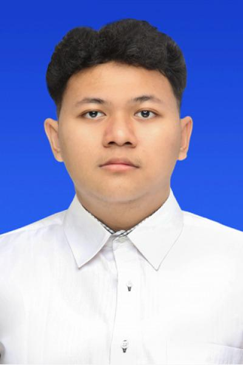

Ahmad Farras Favian Al Efasi
Jl. Tlk. Cendrawasih 1 No.22, Arjosari, Kec. Blimbing, Malang, 65126, Indonesia
Email: ahmadfarrasfavian@gmail.com | Phone: 81234517622
Motivated undergraduate student with proven leadership and organizational management experience,
including leading recruitment and work-program planning as an organization's Vice Chairman.
Strong adaptability, analytical thinking, and teamwork skills, with a track record of coordinating
people and processes to deliver results. Committed to continuous development and to making a
positive contribution in both academic and organizational settings.
Education
Institut Teknologi Sepuluh Nopember (ITS)
International Undergraduate Program, Bachelor of Informatics Engineering (Expected) - Surabaya, Indonesia
Aug 2025 - Sep 2029
SMA Islam Sabilillah
High School Diploma - Malang, Indonesia
Jul 2022 - Jun 2025
Leadership & Organizational Experience
Vice Chairman of the Organization
BIOSTY, SMA Islam Sabilillah - Malang, Indonesia
Jun 2024 - Mar 2025
- Led and managed the organization's open recruitment process, from planning through candidate selection, to build the next generation of members.
- Directed planning and execution of the organization's annual work program across all divisions.
- Coordinated and supported division heads and members to keep programs on schedule and aligned with organizational goals.
- Represented the organization in School internal events, cross-divisional coordination and organizational decision-making.
Member, Publication and Documentation Division
BIOSTY, SMA Islam Sabilillah - Malang, Indonesia
Mar 2023 - May 2024
- Documented organizational events and activities through photos, reports, and other media.
- Prepared publications and informational materials to support member communication.
- Coordinated with fellow division members to divide documentation tasks during organizational events.
Active Member
Photography and Cinematography Club, SMA Islam Sabilillah - Malang, Indonesia
Aug 2022 - Dec 2024
- Participated actively and regularly in club training sessions and creative activities.
- Collaborated with fellow members to plan and execute photography sessions and creative assignments.
- Coordinating with the club mentor and vice principals to plan and organize club activities held outside school area.
Committee and Volunteer Experience
Staff, Consumption and Logistics Division
Student Gathering, SMA Islam Sabilillah - Malang, Indonesia
Sep 2024
- Coordinated logistics and consumption preparation ahead of the event.
- Managed consumption distribution for participants throughout the event day.
- Worked with the logistics team to ensure supplies and consumption items were available and organized throughout the event.
Skills
Leadership:
Team Management
Event Management
Team Coordination
Recruitment Coordination
Other:
Photography
Documentation
Problem Solving
Languages:
English (Upper Intermediate)
Indonesian (Native)